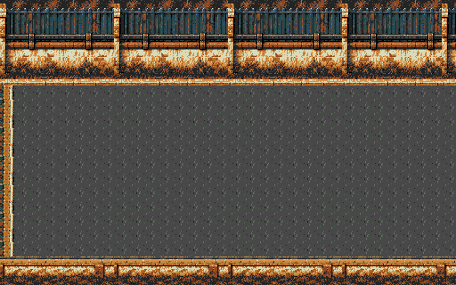
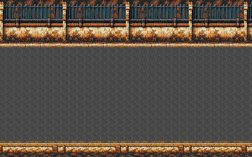
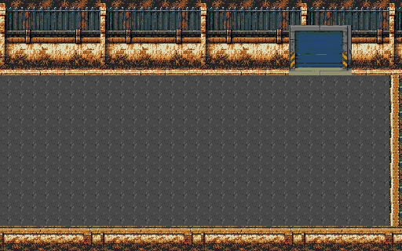
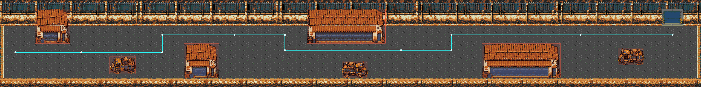

Fase 9 · Rua industrial até a fábrica
Fundo refeito como A → B → B → B → C, com muro industrial externo, asfalto discreto, calçada e limite inferior contínuo. Oficinas e dois galpões largos foram preservados; agora há três caminhões, incluindo um no trecho final; a porta da fábrica mantém os pixels originais de 10/11.
Acesso: FASE TESTE → Campanha → 9.
Mundo: 2560×320 pxTrechos: 512×320 pxCampo: 192 px na verticalPassagens principais: 64 pxVRAM: 448/640 tiles
Cenário inteiro

Examinar em tamanho nativo com rolagem horizontal
Comparar fundo anterior

Três bases, elementos separados

A · chegada da cidade; recebe a oficina inicial.
B · mesma base repetida três vezes, com elementos em posições diferentes.
C · porta original e fechamento da extremidade.| Trecho | Faixa X | Tamanho |
|---|
| A · saída do bairro | 0–511 | 512×320 |
| B · rua industrial | 512–1023 | 512×320 |
| B · repetição | 1024–1535 | 512×320 |
| B · repetição | 1536–2047 | 512×320 |
| C · fábrica | 2048–2559 | 512×320 |
O meio não fecha as laterais. As emendas compartilham a mesma faixa de material; as três cópias de B são idênticas antes da aplicação dos elementos. Só as extremidades absolutas têm limitadores laterais.
Caminho do jogador

A rota sugerida tem 2.576 px e três mudanças principais de faixa: sobe antes da oficina sul, desce antes da doca norte e sobe antes do armazém sul. O novo caminhão em x2256,y176 preenche o trecho final, deixando passagem acima e abaixo e a chegada da fábrica livre. As divisórias verticais longas foram removidas; os prédios agora explicam os desvios.
Os corredores superiores e a passagem entre galpão e caminhão têm 64 px. A rota para pés de 16×16 mantém mais 8 px de margem em cada lado. Todas as 5.611 posições livres da malha estão conectadas. Não existe uma linha horizontal livre que atravesse a fase inteira.
Explorar a composição
Prévia estática com 24 px de HUD reservado. A composição inteira e as silhuetas dos objetos são completas; construções podem sair naturalmente pelas bordas da câmera durante a rolagem.
Capturas do playtest
 Novo caminhão antes da fábrica · ROM em NTSC
Novo caminhão antes da fábrica · ROM em NTSC Saída do bairro · ROM em NTSC
Saída do bairro · ROM em NTSC Contorno da oficina sul · ROM em NTSC
Contorno da oficina sul · ROM em NTSC Doca do galpão norte · ROM em NTSC
Doca do galpão norte · ROM em NTSC Contorno do armazém sul · ROM em NTSC
Contorno do armazém sul · ROM em NTSC Entrada da fábrica · ROM em NTSC
Entrada da fábrica · ROM em NTSC Carga máxima na doca · ROM em NTSC
Carga máxima na doca · ROM em NTSCO teste percorreu a fase por controle e alcançou a fábrica sem escrever posições ou progresso durante a travessia. O combate foi isolado antes desse percurso. Contatos, limites, pausa e pixels visíveis foram conferidos separadamente em NTSC/PAL, com 109 amostras de câmera por região.
Memória e carga
827 padrões exatos na ROM (26.464 bytes) e mapa de 25.600 bytes. O cache mantém 448 tiles / 14.336 bytes residentes; a janela conservadora exige no máximo 410. O cache usa 5.238 bytes de heap e é liberado na pausa. A versão anterior mantinha 630 tiles / 20.160 bytes residentes: redução de 5.824 bytes, cerca de 29%. Nenhum tile foi substituído por aproximação.
Quatro trechos, 20 s cada, com três inimigos de IA ativa e 4+4 tiros, vida protegida e reposição apenas dos tiros inativos: 60 FPS NTSC e 50 FPS PAL. Nos limites medidos, até 15 sprites visíveis, 7 por linha e 120 px por linha. Isso descreve esse teste de carga, não uma garantia para qualquer situação.
Combate natural de até 30 s registrado à parte; no PAL, a amostra termina em derrota aos 27,62 s e mede 48,226 FPS. Dificuldade humana e hardware físico não certificados. As salas 10/11 mantêm os mesmos dados nativos; regressões e limitações estão no relatório.
ROM: 37bf6f1866028c5affc90b43f93ec09099cb76eb8cd20cd33b5c778b23b78635